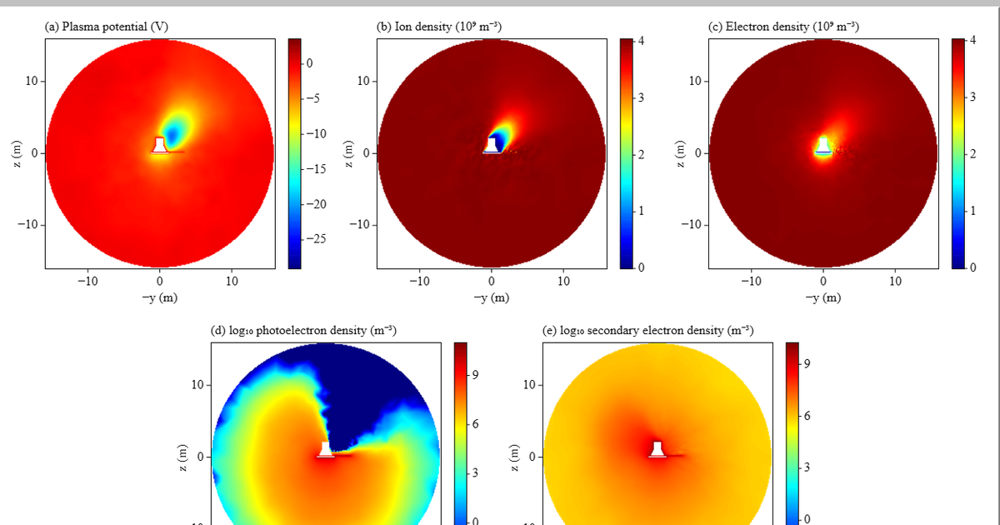

Parker Solar Probe Charging Simulation
Chau Nguyen
University of Massachusetts Lowell

Spacecraft Plasma Interaction Software (SPIS) simulations of Parker Solar Probe and its FIELDS antenna at six distances from 1 AU to 9.5 solar radii, in the plasma conditions of each distance (density 6.9 × 106 to 4.0 × 109 m−3, electron temperature 8 to 84 eV, sunlight 1 to 512 times Earth's, magnetic field on). The spacecraft and antenna are one conductor. Each run shows the plasma potential and the ion, electron, photoelectron and secondary-electron densities on the plane x = 0, from the start of the run until the spacecraft has charged.
Research with the Parker Solar Probe FIELDS team at the Space Sciences Laboratory, UC Berkeley, and Professor Mei-Yun Lin, UMass Lowell.
Open the simulation Four-panel version